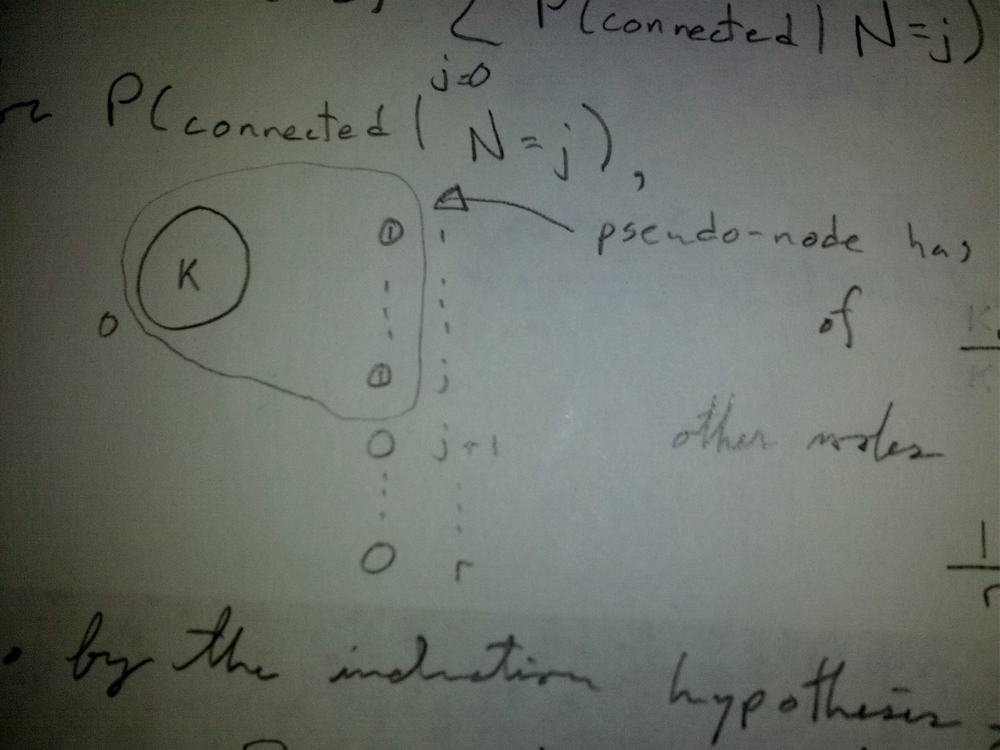

More Conditioning: Galton-Watson Branching Process¶
Example
Galton-Watson Branching Process
\(X_0 = 1\)
\(X_n = Y_{n-1,1} + ... + Y_{n-1,X_{n-1}}\)
where the \(Y_{k,j}\) are independent, identically distributed random variables on \(\{0,1,2,...\}\) representing family sizes; \(Y_{n,j}\) is the family size of the \(j\) th individual in generation \(n\).
Let \(\mu\) denote the mean family size.
Compute \(E[X_n]\).
To compute \(E[X_n]\), condition on \(X_{n-1}\)
if \(\mu<1\), \(E[X_n] \to 0\) as \(n \to \infty\)
Consider the probability that the population eventually dies out (extinction probability). “eventually dies out” is the event that \(X_n=0\) for some \(n\), which is:
Note
\(\{X_n=0\} \implies \{X_{n+1}=0\}\) for all \(n\).
So, \(\{\{X_n=0\}\}^\infty_{n=1}\) is an increasing sequence of events.
Therefore, \(\bigcup_{n=1}^\infty \{X_n = 0\} = \lim_{n\to\infty}\)
So, \(P(extinction) = P(\lim_{n\to\infty}\{X_n=0\})\)
\(=\lim_{n\to\infty} P(X_n=0)\) by continuity of probability.
Now, \(E[X_n]=\sum\limits_{j=1}^{\infty}jP(X_n=j) \geq \sum\limits_{j=1}^{\infty} P(X_n=j)\)
\(= 1-P(X_n=0)\)
So, \(\mu^n \geq 1 - P(X_n = 0)\) or
\(P(X_n=0) \geq 1-\mu^n\), So \(\lim_{n\to\infty} P(X_n=0)=1\)
Example
A Random Graph

each node \(1...r\) independently chooses another node as follows:
Node 0 with probability \(\frac{k}{k+r}\) and Node \(j\) with probability \(\frac{1}{k+r}\), \(j \in \{1,2,...,r\}\).
Then, draws an arc between itself and the chosen node.
What is the probability that the resulting graph is connected?
Let \(N\) be the number of nodes that choose node 0.
We will show that \(P(connected)=\frac{k}{k+r}\)
Proof by induction on \(r.\)
For \(r=1\), obvious.
Assume true for \(1,...,r-1\)
For \(r\), condition on \(N\).
So, \(P(connected) = \sum\limits_{j=0}^r P(connected|N=j)P(N=j)\) For \(P(connected|N=j)\),
the pseudo-node has probability of being chosen of \(\frac{j}{r}\) (conditioning on not choosing node 0).
other nodes have probability of being chosen of \(\frac{1}{r}\)
So, by the induction hypothesis,
so,